Del guion al reel ilustrado, sin pagar nada
Escribes un roteiro.json; rtexjp te devuelve un reel vertical de 1080×1920 en azul marino, con un avatar ilustrado de Nei, una mascota robot, la voz de Nei (o la tuya) y una única pregunta de opinión: «comenta DONO o REFÉM».
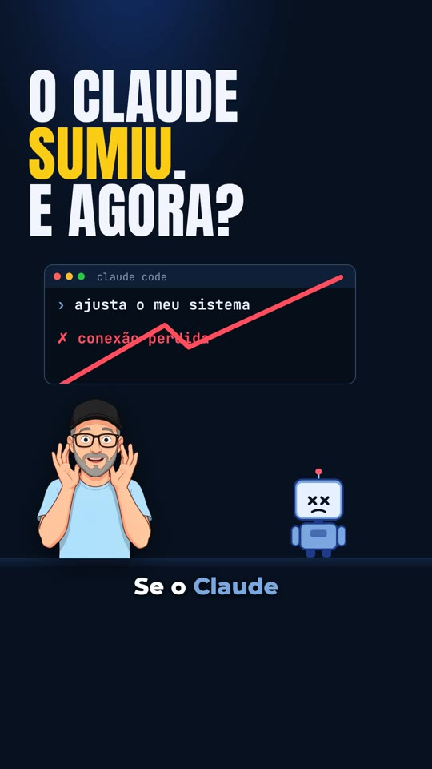
rtexjp es un motor que monta vídeos cortos verticales (reels) ilustrados, en azul marino, a partir de un guion escrito en un archivo de texto (roteiro.json). Es el motor que Nei usa en los reels de INEMA, abierto a quien quiera estudiar o adaptarlo: sin grabarte y sin pagar por un servicio de avatares. Genera la voz, dibuja cada escena cuadro a cuadro, mezcla la música y comprueba por sí solo que el vídeo siga el formato. Necesitas un ordenador con tarjeta gráfica (GPU), Python, Node, ffmpeg y dos servidores locales: el de voz (inemavox) y el de imagen (flux2-klein).
Viene configurado con la voz y el avatar de Nei. Para usar los tuyos, asigna las variables de entorno RTEXJP_VOZ_REF (grabación de referencia de la voz) y RTEXJP_AVATAR_REF (foto del avatar) a tus archivos, describe a tu personaje en RTEXJP_AVATAR_DESC (si no lo haces, las poses salen con la gorra, las gafas y la barba de Nei) y vuelve a generar las poses; no hace falta editar el código. Estos dos archivos no están incluidos en el repositorio (consulta Requisitos previos).
Un formato fijo, comprobado por un validador
Todos los reels siguen la misma estructura: gancho en el cuadro 0, prueba con fuente, el problema de quien mira, piezas numeradas, una salvedad honesta, una máxima y una pregunta de opinión. El motor dibuja; el validador avisa si algo se sale del formato.
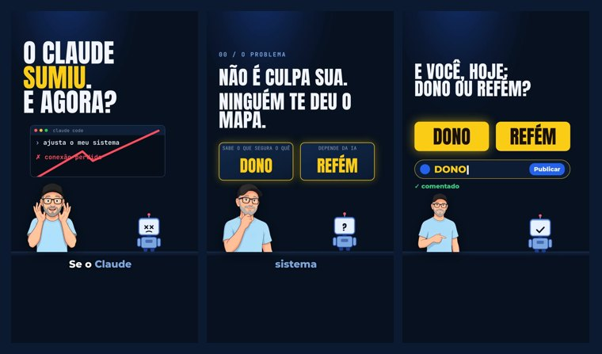
🎨 Ilustrado, sin lip-sync
Avatar ilustrado de Nei grande, abajo (≈ 43 % de la altura), en 11 poses vinculadas a la emoción de lo que dice (susto, duda, señala, explica, pulgar arriba…), un dibujo protagonista por escena y una mascota robot. Nadie tiene que grabar nada.
🎙️ Voz de Nei, local
Voz generada con TTS local (inemavox chatterbox), de 160–190 palabras por minuto; Whisper local marca el tiempo de cada palabra para los subtítulos y los disparadores de escena.
✅ QA automático
Mide la duración, el ritmo del habla, el volumen (−14 LUFS), los cambios visuales por minuto, la prueba antes de los 20 s, las opciones de la pregunta sembradas de antemano, la CTA sin promesa de entrega, la tarjeta final y el silencio antes de la máxima. Genera un qa.md y un contact.jpg.
Las nueve reglas del formato rtexjp
Esto es lo que exigen el comando checar y el QA en cada edición.
- Gancho en el cuadro 0, de uno de estos tipos: contrario (ordena dejar de hacer algo que todos hacen), pérdida (¿y si desapareciera X?), estadística de miedo con fuente o historia de otra persona con una cifra. Prohibido: listas («5 cosas…»), «¿sabías que…?», «yo hice…».
- Titular del cuadro 0 de hasta ~6 palabras, en mayúsculas, con una palabra en amarillo, más agresivo que lo que se dice. Un objeto dibujado con daños (rayado en rojo, roto), el avatar reacciona en el primer segundo y algo cambia cada ~1 s durante los primeros 3 segundos. El cuadro 0 sirve de portada.
- Prueba antes de los 20 s: una captura real de la página de la fuente, la cifra en el titular y la línea
fonte:debajo. - El problema de quien mira, con absolución («no es culpa tuya, nadie te dio el mapa»). Aquí ya se plantea la pregunta final: las opciones aparecen en amarillo.
- Un tema por vídeo, en 2–5 piezas con índice visible y barra de píldoras arriba; un objeto por frase, con cambios cada 2–3 s.
- Toda cifra tiene su fuente escrita en pantalla (
fonte: …). - Salvedad honesta hablada, en una tarjeta de aviso (rojo = problema, verde = correcto).
- Máxima en forma de antítesis, después de 0,8 s de silencio real (se detienen la voz y la música).
- CTA de opinión: Nei dice de qué lado está y hace una pregunta contundente que se responde con una palabra («comenta DONO o REFÉM»). La tarjeta muestra la pregunta y las opciones; el cuadro de comentarios escribe una opción, la publica y lo confirma. Permanece ~10 s, sin despedida. Nunca promete entregar nada («te lo mando», «te lo envío»): nadie responde a los comentarios. El enlace y la fuente quedan fijos en el comentario fijado.
Glosario rápido
Pregunta de opinión
La pregunta del final, con dos opciones de una palabra (en el 2.º vídeo, DONO o REFÉM). La tensión aparece en el cuadro 0, las opciones se presentan pronto y solo ellas (y la palabra destacada del titular) quedan en amarillo.
Máxima
La frase que resume el final, en forma de antítesis («Ser dueño de tu sistema nunca fue saber cada línea. Es saber qué sostiene qué»). Va después de un breve silencio.
Escenario
La página motor/palco.html que dibuja cada escena. El render toma una captura de ella por cada cuadro.
Base musical
Música suave que suena por debajo de la voz, baja cuando esta habla y se detiene durante el silencio antes de la máxima.
LUFS
Medida del volumen percibido. −14 LUFS es el volumen que las redes usan como estándar.
CTA
«Llamada a la acción»: la petición final del vídeo. Aquí siempre es una sola, una pregunta de opinión que se responde con una palabra.
TTS y lip-sync
TTS es la voz generada a partir del texto. Lip-sync es el movimiento de la boca al hablar; rtexjp no lo hace, el avatar solo cambia de pose.
Whisper y Playwright
Whisper transcribe la voz y marca el tiempo de cada palabra. Playwright abre el escenario en un navegador sin ventana y captura cada cuadro.
Destello tipográfico
Una pantalla rápida con solo texto grande entre las piezas, para que el vídeo no se quede quieto.
Tipos de bloque
tese = afirmación (el gancho, el problema); autoridade = la prueba con fuente; virada = el índice que anuncia las piezas; metodo = cada pieza; planta es solo el id del bloque que introduce las opciones de la pregunta final.
Golpe
Un fragmento del bloque que cambia el titular, el dibujo y la pose en la palabra marcada en em. Así algo cambia cada 2–3 s.
Dibujo protagonista
El objeto ilustrado grande en el centro de la pantalla (terminal roto, mapa, candado), tomado de la biblioteca motor/assets/objetos/.
El visual v1.2, de arriba abajo
- Etiqueta en tipografía monoespaciada (≥ 30 px) y, en las piezas, las píldoras 01–03.
- Titular en Sora ExtraBold, centrado, de 2–3 líneas, ≥ 96 px, casi blanco, con una palabra en azul acero claro (amarilla solo en el cuadro 0).
- Dibujo protagonista o captura real, grande, entre el titular y el avatar.
- Subtítulos tipo karaoke en una franja propia, con la palabra pronunciada resaltada.
- Avatar grande, abajo y centrado, en la pose del golpe; la cara queda por encima del 80 % de la altura.
El fondo tiene un foco de luz y un granulado suave, y alterna entre azul marino y un papel azul hielo ("tema": "claro" en la escena), con letras azul marino. Durante el silencio antes de la máxima, el último cuadro queda congelado con el avatar pensativo: nunca hay una pantalla vacía.
Control visual: el QA mide directamente en el escenario, con dos muestras por bloque, el titular (≥ 96 px), todo el texto (≥ 30 px), el área ocupada (≥ 55 % del cuadro útil), el contraste del texto (≥ 4,5:1) y la altura del avatar (≥ 38 %). Se aplica a los guiones con "versao": "rtexjp/3".
Seis pasos, un comando cada uno
rtexjp.py ejecuta los pasos en orden. El escenario es una página HTML dibujada por window.render(t): el mismo build/cena.json siempre genera el mismo vídeo. La voz no: el TTS sale un poco diferente cada vez (por eso el paso voz permite rehacer solo algunos bloques).
Guion y validación
checar comprueba la estructura mediante el campo tipo: empieza con tese, incluye virada antes del primer metodo (2–5 piezas), ressalva antes de maxima y maxima justo antes de cta, al final. El 2.º ejemplo usa tese (gancho) → autoridade (prueba) → tese (problema + opciones) → virada → metodo ×3 → ressalva → maxima → cta.
Voz y escena
voz genera un audio por bloque, acelera hasta 1,15× y los une; cena combina el guion con el tiempo de cada palabra.
Render, mezcla y QA
render captura el escenario cuadro a cuadro; mix añade la música (que se detiene durante el silencio de la máxima); qa lo mide todo.
Qué debe estar instalado en el ordenador
Todo funciona localmente. No se llama a ninguna API de pago. Las rutas se obtienen de variables de entorno, con los valores predeterminados del ordenador de Nei; si el tuyo es distinto, exporta las variables (tabla de abajo) y no hace falta cambiar el código.
Voz: inemavox + entorno chatterbox
El proyecto inematds/inemavox clonado en ~/projetos/inemavox (el motor llama a su tts_direct.py y whisper_daemon.py). El TTS chatterbox y Whisper large-v3 funcionan en un entorno Python aparte (en el ordenador de Nei, el entorno conda chatterbox en ~/miniconda3/envs/chatterbox); si el tuyo está en otro sitio, ajusta las variables de abajo. Si lo clonas en otra ubicación, exporta RTEXJP_INEMAVOX con la ruta. Whisper large-v3 ocupa unos 10 GB de la tarjeta gráfica (GPU NVIDIA), además de chatterbox. Probado en Linux.
git clone https://github.com/inematds/inemavox ~/projetos/inemavox cd ~/projetos/inemavox && python3 -m venv venv ./venv/bin/pip install -r requirements.txt # o rtexjp llama a venv/bin/python tts_direct.py # chatterbox + faster-whisper en un entorno propio (consulta el README de inemavox) export CHATTERBOX_PYTHON=/caminho/do/env/bin/python3 # TTS export CS_WHISPER_PY=/caminho/do/env/bin/python3 # Whisper
Imagen: flux2-klein
El servidor inematds/inemaimg con el modelo flux2-klein (ruta predeterminada http://localhost:8000/generate, o la dirección indicada en RTEXJP_IMG_URL), además de la foto de referencia del avatar (RTEXJP_AVATAR_REF). Solo hace falta para los pasos opcionales 4 y 5 (poses y dibujos de escena); las poses de Nei y la biblioteca de dibujos ya vienen preparadas.
Node, ffmpeg, Python
Node 18 o posterior, ffmpeg (incluye ffprobe) y Python 3 con Pillow y numpy.
git clone https://github.com/inematds/rtexjp cd rtexjp npm i npx playwright install chromium pip install --user pillow numpy # o dentro de un venv
Rutas y variables de entorno
RTEXJP_INEMAVOX · carpeta de inemavox (TTS + Whisper) | ~/projetos/inemavox |
RTEXJP_VOZ_REF · grabación de referencia de la voz (.wav) | ~/projetos/timesmkt3/media/voice-refs/nei.wav |
RTEXJP_IMG_URL · servidor de imágenes flux2-klein | http://localhost:8000/generate |
RTEXJP_AVATAR_REF · foto de referencia del avatar | ~/projetos/inema-referencias/nei-avatar.jpg |
RTEXJP_AVATAR_DESC · rasgos y ropa del personaje en la solicitud de imagen (en inglés) | gorra negra, gafas, barba canosa, camiseta azul acero (Nei) |
RTEXJP_TRILHA · base musical de la mezcla | motor/assets/trilha.mp3 |
CS_WHISPER_PY · Python del entorno con faster-whisper (servidor de Whisper y plan B) | ~/miniconda3/envs/chatterbox/bin/python3 |
CHATTERBOX_PYTHON · Python del entorno chatterbox, requerido por tts_direct.py de inemavox | el del entorno chatterbox |
# ejemplo: todo en otras rutas, sin editar el código export RTEXJP_INEMAVOX=~/inemavox export RTEXJP_VOZ_REF=~/minha-voz.wav export RTEXJP_AVATAR_REF=~/minha-foto.jpg export RTEXJP_AVATAR_DESC="same face, short brown hair, no glasses. She wears a plain navy blazer" export RTEXJP_IMG_URL=http://outra-maquina:8000/generate
Del guion a final.mp4
Cada edición se guarda en edicoes/<id>/. El atajo tudo (paso 10) ejecuta de una vez checar, voz, cena, render, mix y qa (sin la vista previa de cuadros del paso 7).
Indica tu voz de referencia tú
El paso de voz clona la voz a partir de una grabación breve. La configuración predeterminada apunta a la grabación de Nei, que no está incluida en el repositorio; si no indicas la tuya, el paso voz fallará. Graba entre 10 y 20 segundos de voz limpia en WAV y exporta RTEXJP_VOZ_REF. Si también vas a cambiar el avatar, exporta RTEXJP_AVATAR_REF con una foto tuya y RTEXJP_AVATAR_DESC con tus rasgos y tu ropa, y ejecuta el paso 4.
export RTEXJP_VOZ_REF=~/minha-voz.wav export RTEXJP_AVATAR_REF=~/minha-foto.jpg # solo si vas a cambiar el avatar
Escribe el guion tú
Copia el guion del ejemplo y cambia el contenido. El formato se resume justo debajo de la guía, en «El roteiro.json».
mkdir -p edicoes/minha-edicao cp edicoes/2026-10-28-mapa/roteiro.json edicoes/minha-edicao/ # después edítalo
Valida las reglas del formato
Sin opiniones, solo reglas. Se rechaza lo siguiente: orden incorrecto de los bloques, menos de 2 o más de 5 piezas, índice distinto del número de piezas, cifras o signos de exclamación en lo que se dice (escribe los números con letras), fonte que no existe en fontes, palabra de destaque_fala o del disparador que no aparece en lo que se dice, cifra en pantalla sin fuente, silencio antes de la máxima fuera del intervalo de 0,5–0,9 s. Gancho: gancho.tipo no está en la lista, gancho de lista/«¿sabías que?»/«yo hice», titular del cuadro 0 con más de ~6 palabras, sin mayúsculas o sin la palabra destacada, sin objeto dañado o prueba después del tercer bloque. Pregunta: pregunta sin «?», opciones que no son una palabra en mayúsculas, opción que no aparece en la frase de la CTA o no se ha presentado antes, lado de Nei no expresado antes de la pregunta, elemento que se promete entregar o CTA que promete algo («te lo mando», «te lo envío», «comenta X y…»). El guion en el formato antiguo (palabra + elemento prometido, sin gancho) pasa solo con un aviso de LEGADO.
python3 rtexjp.py checar edicoes/minha-edicao
Poses del avatar opcional
Las 11 poses de Nei (camiseta azul acero) ya están en motor/avatar/: susto, surpreso, duvida, queixo, apontando, olha, explica, polegar, bracos, segurando, mostrando. Ejecútalo solo si cambiaste el personaje: la foto (RTEXJP_AVATAR_REF) y la descripción de rasgos y ropa (RTEXJP_AVATAR_DESC, en inglés, que se incluye en la solicitud a flux2-klein). Pasa los nombres para volver a generar solo esas poses. Revisa cada pose antes de seguir: el fondo verde se recorta automáticamente, pero una mano torcida o un fondo oscuro requieren otro intento.
python3 motor/gerar_avatar.py # todas python3 motor/gerar_avatar.py susto duvida # solo estas
Dibujos protagonistas y captura de la prueba opcional
Cada golpe del guion muestra un objeto ilustrado grande entre el titular y el avatar, con el mismo estilo plano. Se guardan en una biblioteca reutilizable, motor/assets/objetos/<nome>.png, junto con la solicitud y la semilla en indice.json. Ya hay 10 (terminal roto, mapa con chinchetas, mapa rasgado, lupa sobre archivos, globo explicativo, dominós, aviso de coste, carpeta, llave, candado). Para crear otro, describe el objeto en inglés; si sale torcido o manchado, cambia la semilla. La prueba usa una captura real de la página de la fuente, guardada en edicoes/<id>/prova/ y citada en el campo print del golpe.
python3 motor/gerar_objeto.py foguete "a small blue rocket taking off" 11 python3 motor/gerar_objeto.py --lista node motor/capturar_prova.mjs https://github.com/dono/repo edicoes/minha-edicao/prova/pagina.png node motor/capturar_prova.mjs https://github.com/dono/repo edicoes/minha-edicao/prova/estrelas.png --clip 1130,180,130,44
Voz por bloque y tiempo de cada palabra
Genera un audio por bloque con la voz de Nei; Whisper marca cada palabra en build/tempos.json. Pasa los nombres de los bloques para rehacer solo esos. Whisper funciona como servidor de inemavox (whisper_daemon.py, con el Python de CS_WHISPER_PY); si no se inicia, el motor usa transcrever_v1.py de inemavox con ese mismo Python. El registro está en ~/.cache/whisper_daemon.log.
python3 rtexjp.py voz edicoes/minha-edicao # todos los bloques python3 rtexjp.py voz edicoes/minha-edicao p2 ressalva # solo estos
Monta la escena y revisa cuadros sueltos
cena guarda build/cena.json. Antes del render completo, captura algunos cuadros (en segundos) para revisarlos.
python3 rtexjp.py cena edicoes/minha-edicao node motor/render.mjs edicoes/minha-edicao/build --quadros 0,10,20 # -> edicoes/minha-edicao/quadros/
Render a 1080×1920 y 30 fps
Playwright captura el escenario cuadro a cuadro y ffmpeg los une en build/video.mp4 (sin audio).
python3 rtexjp.py render edicoes/minha-edicao
Mezcla y QA
Voz + música suave (que se detiene durante el silencio de la máxima), volumen final de −14 LUFS. La música de motor/assets/trilha.mp3 es la base de los reels de Nei: para publicar los tuyos, asigna RTEXJP_TRILHA a una pista cuya licencia conozcas; luego el QA genera qa.md, build/qa.json y contact.jpg. Los criterios que no se cumplan aparecen con ❌ en qa.md y el comando termina con un error de Python (CalledProcessError): indica que el QA no se aprobó, no que haya un error en el código.
python3 rtexjp.py mix edicoes/minha-edicao # -> final.mp4 python3 rtexjp.py qa edicoes/minha-edicao # -> qa.md, contact.jpg
O ejecuta todo de una vez
Ejecuta checar → voz → cena → render → mix → qa. Se detiene si checar lo rechaza.
python3 rtexjp.py tudo edicoes/minha-edicao
Revísalo antes de publicar tú
Abre contact.jpg y mira el vídeo. El título, la descripción (que termina con la pregunta) y el comentario fijado (con el enlace al repositorio y la fuente, sin ofrecerlos como recompensa) están en el bloque publicar del guion. La publicación queda fuera de este repositorio.
El formato del guion, en una pantalla
Un objeto con id, versao, titulo, gancho, isca, fontes, la lista blocos y el bloque publicar. Fragmento real del 2.º ejemplo, abreviado (las líneas // no son JSON válido; el archivo completo está en edicoes/2026-10-28-mapa/roteiro.json):
{
"id": "2026-10-28-mapa", "versao": "rtexjp/2",
"gancho": { "tipo": "perda", "objeto": "terminal do Claude Code rachado em vermelho..." },
"isca": { "tipo": "opiniao", "pergunta": "Você é dono ou refém do sistema que a IA montou?",
"opcoes": ["DONO", "REFÉM"], "lado": "Eu quero ser dono do meu" },
"fontes": [ { "id": "ua", "valor": "88,7 mil estrelas", "linha": "github.com/Egonex-AI/Understand-Anything · 28/10/2026" } ],
"blocos": [
{ "id": "tese", "tipo": "tese", "pose": "surpreso",
"fala": "Se o Claude Code sumisse amanhã, você saberia mexer no sistema que ele montou pra você?",
"fala_tts": "Se o Clôud Côud sumisse amanhã, ...",
"tela": { "texto": "O CLAUDE SUMIU. E AGORA?", "destaque": "SUMIU" },
"cena": { "comp": "gancho", "params": { "carimbo": "FORA DO AR", ... } } },
// ... autoridade (prova), tese (problema + opções), virada, metodo ×3, ressalva ...
{ "id": "maxima", "tipo": "maxima", "silencio_antes_s": 0.8, "cena": { "comp": "flash" },
"fala": "Ser dono do teu sistema nunca foi saber cada linha. É saber o que segura o quê." },
{ "id": "cta", "tipo": "cta", "hold_s": 7.5, "cena": { "comp": "opiniao", "params": { "digita": "DONO" } },
"fala": "Eu quero ser dono do meu. E você, hoje: dono ou refém do sistema que a IA montou? Comenta DONO ou REFÉM." }
],
"publicar": { "titulo": "...", "descricao": "... termina na pergunta?", "comentario_fixado": "link do repo + fonte" }
}
Campos de cada bloque
tipo (orden anterior) · fala (escrito con letras, sin cifras) · fala_tts (opcional, grafía para que el TTS lo pronuncie correctamente) · tela (texto grande y palabra resaltada) · cena.comp + cena.params (lo que dibuja el escenario; params.gatilhos vincula un cambio de escena a una palabra de lo que se dice) · pose del avatar · destaque_fala (palabras coloreadas en los subtítulos) · fonte (id en fontes) · rotulo y n (número de la pieza). Solo en maxima: silencio_antes_s (0,5–0,9). Solo en cta: hold_s, cuánto permanece la tarjeta después de la última palabra (5–9 s; con la voz, la tarjeta completa dura ~10 s). Arriba: gancho.tipo (contrario, perda, estatistica, historia) y gancho.objeto; isca con tipo: "opiniao", pergunta, opcoes y lado.
Componentes del escenario (cena.comp)
Formato actual: gancho (cuadro 0 con objeto dañado), contador (acepta decimais), duas (problema + opciones de la pregunta), indice, mapa, explica, impacto, ressalva, flash, opiniao (tarjeta de la pregunta). De la 1.ª edición, aún disponibles en el escenario: titulo, frase, pasta, repo, carro, equipe, cta (legado). La mascota robot la dibuja el propio escenario, junto al avatar, y reacciona a la escena (interrogación, alerta, visto bueno). Poses: bracos, queixo, apontando, segurando, surpreso, mostrando. Los parámetros de cada componente están en los ejemplos edicoes/2026-10-28-mapa/roteiro.json y edicoes/2026-10-28-5-coisas/roteiro.json.
Dos vídeos hechos con el motor
El 2.º vídeo sigue el formato actual (azul marino, gancho de pérdida, pregunta de opinión) y se rehízo con el visual v1.2. El 1.º, ya publicado, se mantuvo como estaba: paleta morada antigua, gancho de lista y pregunta con algo prometido, reglas que el formato actual ya no acepta.
2.º vídeo · «O Claude sumiu. E agora?» visual v1.2
Un solo tema (el plugin Understand Anything), gancho de pérdida, tres piezas y la pregunta DONO o REFÉM. Los archivos están en edicoes/2026-10-28-mapa-v2/ (el bloque publicar del guion incluye el título, la descripción y el comentario fijado). La versión anterior, con el visual v1.1, está en edicoes/2026-10-28-mapa/ para comparar.
Qué midió el QA
| Duración | 71,9 s |
| Resolución | 1080×1920 · 30 fps |
| Ritmo del habla | 173 palabras/min |
| Volumen | −14,0 LUFS |
| Cambios visuales | 25,9 por minuto |
| Titular / texto más pequeño | ≥ 98 px / ≥ 30 px |
| Área ocupada / avatar | ≥ 55 % / 43 % de la altura |
| Contraste del texto | ≥ 5,2:1 |
| Prueba (cifra con fuente) | a los 5,6 s |
| Opciones de la pregunta antes de la CTA | 45,2 s antes |
| CTA sin promesa de entrega | sí |
| Silencio antes de la máxima | 0,88 s |
| Tarjeta final (voz + 7,5 s fija) | 14,6 s |
Aún no publicado en redes: el reproductor reproduce el archivo edicoes/2026-10-28-mapa-v2/final.mp4 del repositorio. Descargar final.mp4 (20 MB) · versión v1.1 (7,8 MB)
Antes y después: v1.1 arriba, v1.2 abajo
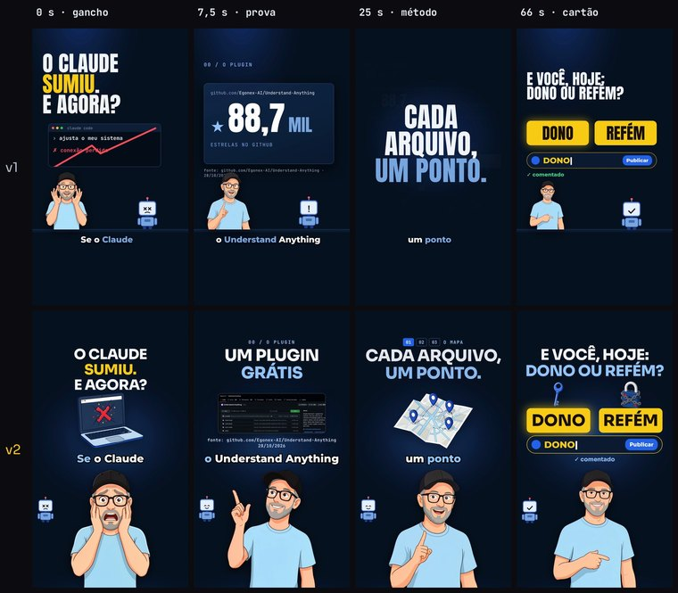
Cuadro a cuadro (2.º vídeo, v1.2)
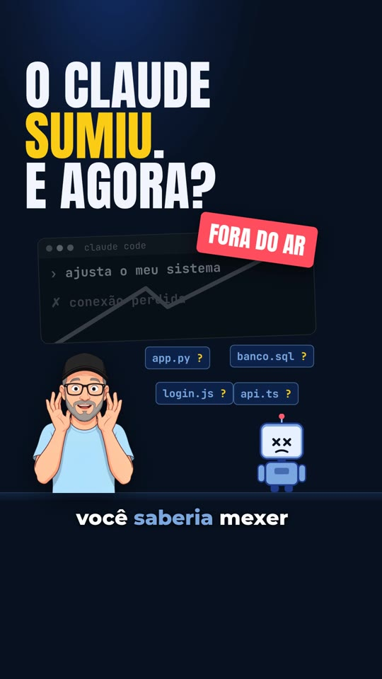
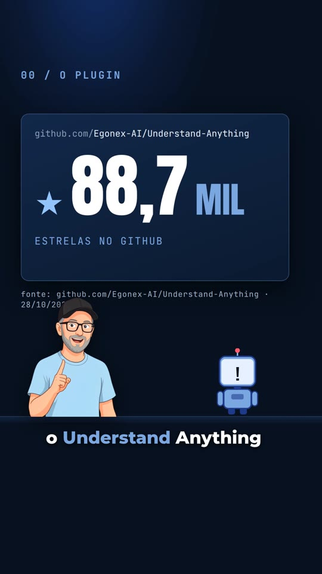
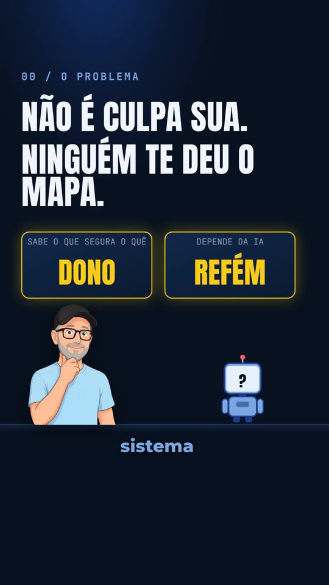
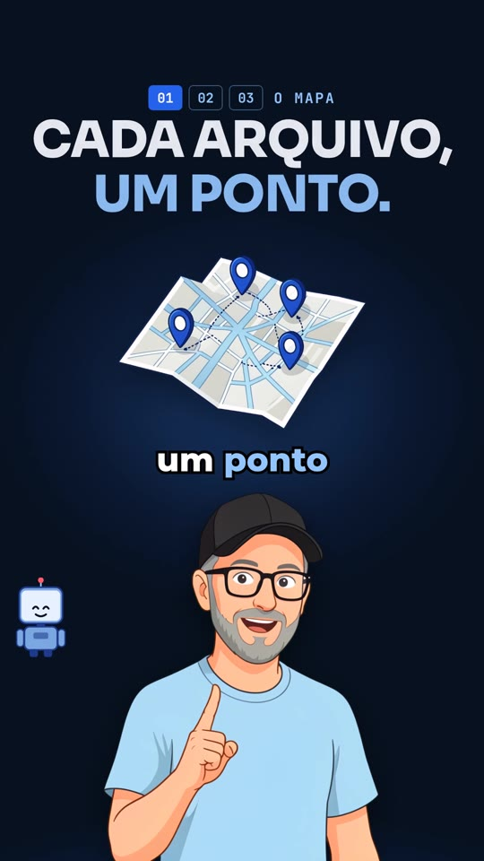
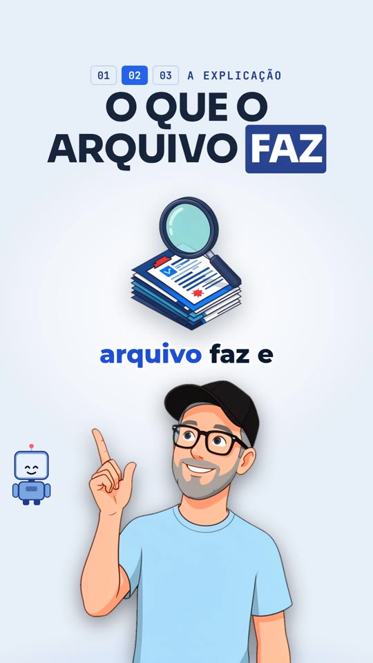
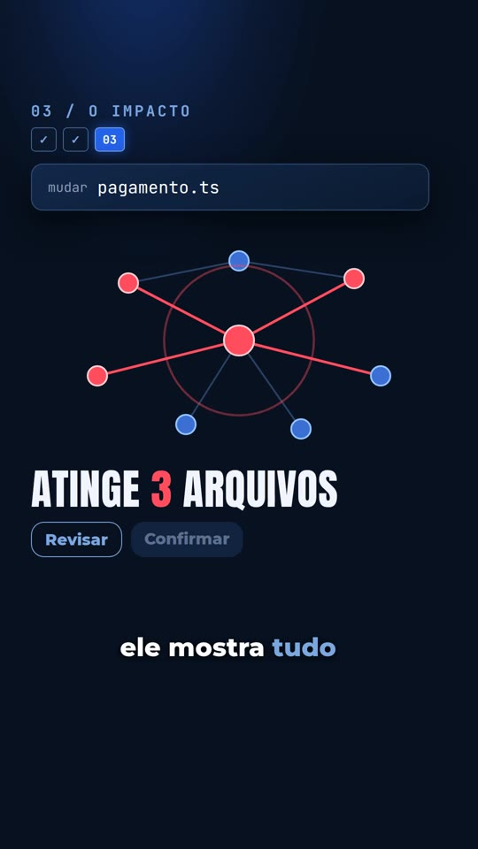
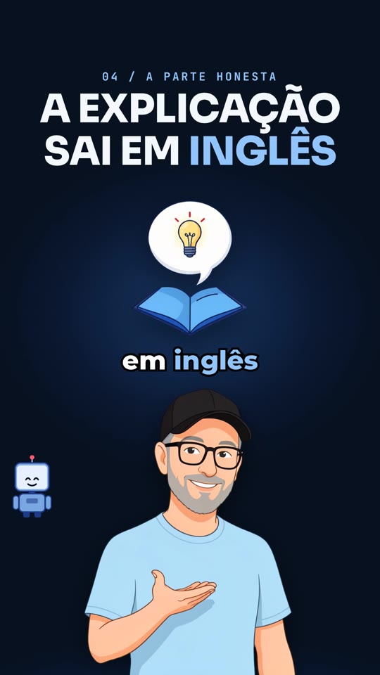
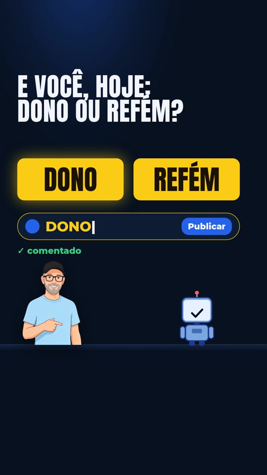
La hoja de contacto del 2.º vídeo
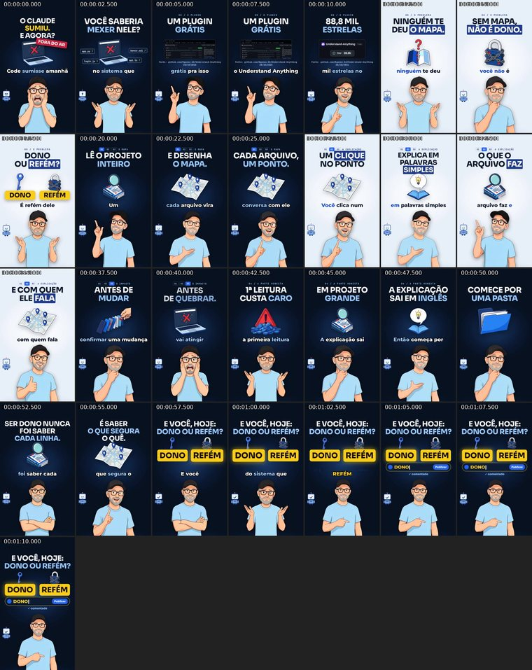
1.º vídeo · «5 cosas de IA de este mes que casi nadie notó» paleta morada antigua
La primera edición, publicada en YouTube. Formato antiguo: paleta morada, gancho de lista y pregunta SETUP con algo prometido. Los archivos están en edicoes/2026-10-28-5-coisas/.
Qué midió el QA
| Duración | 87,5 s |
| Resolución | 1080×1920 · 30 fps |
| Ritmo del habla | 164 palabras/min |
| Volumen | −14,0 LUFS |
| Cambios visuales | 18,5 por minuto |
| La pregunta aparece antes de la CTA | 68,5 s antes |
| Silencio antes de la máxima | 0,83 s |
| Tarjeta final | 9,9 s |
Cuadro a cuadro (1.º vídeo)
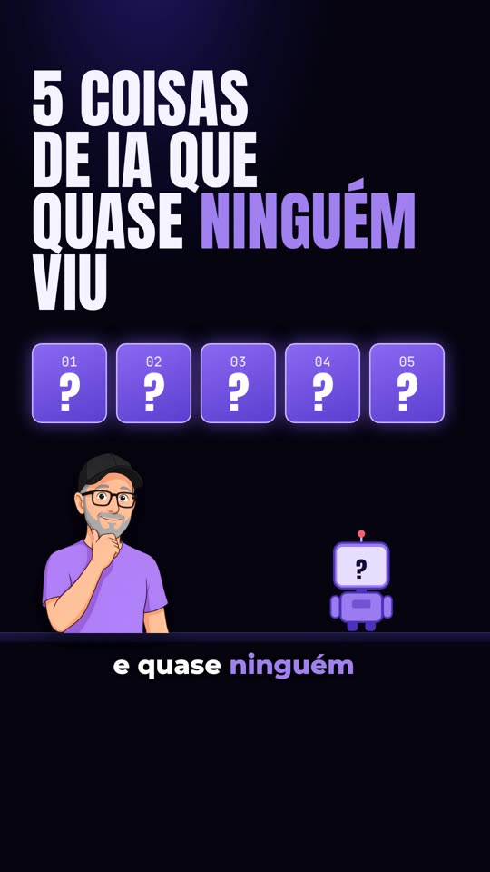
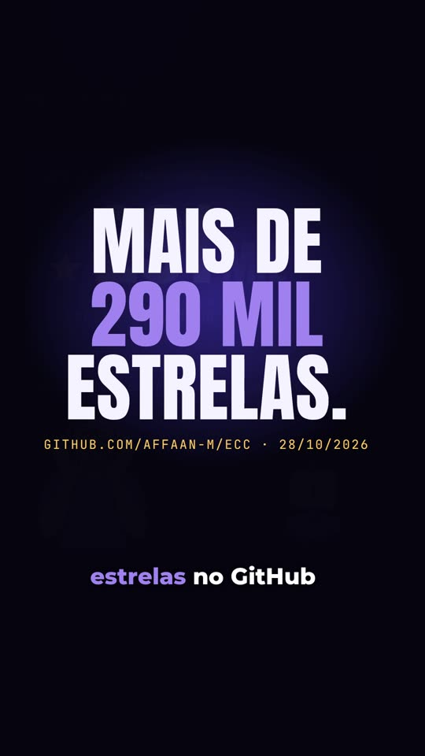
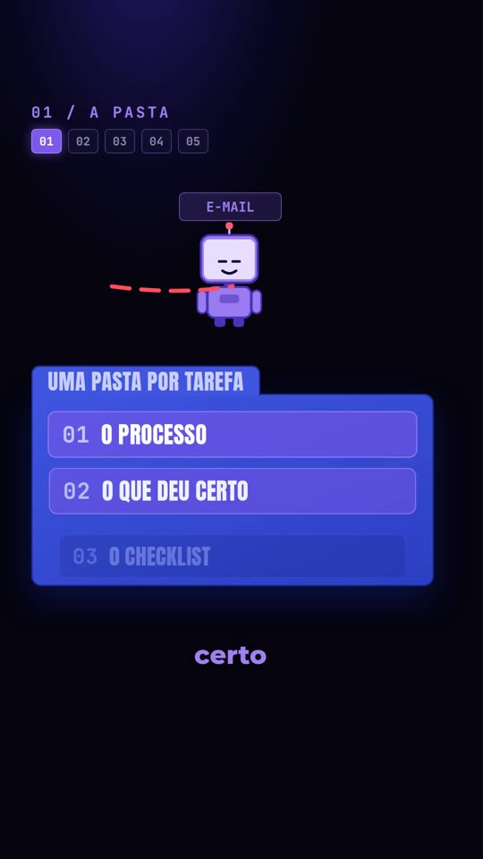
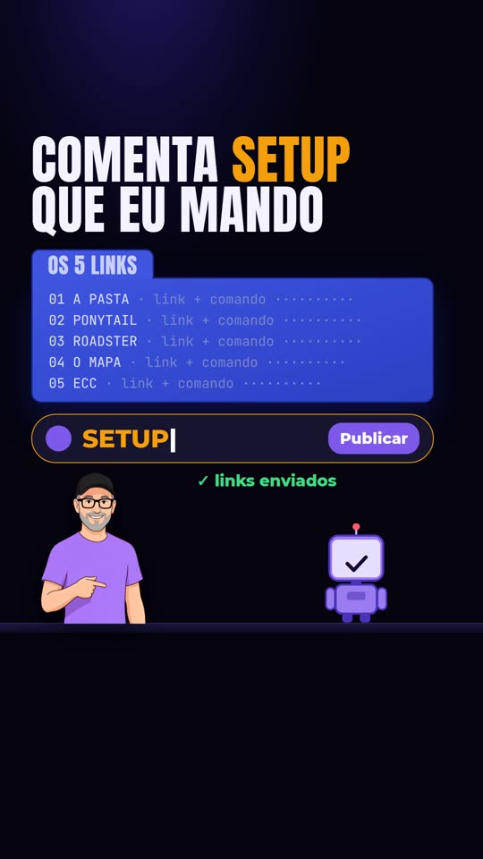
En qué punto está el proyecto
Lo que hay ahora en el repositorio.
checar, pregunta de opinión sin promesa de entrega y rutas mediante variables de entorno.motor/assets/objetos/), captura real para la prueba, titular Sora centrado, subtítulos tipo karaoke, papel azul hielo alternado con azul marino, granulado y foco de luz, y control visual en el QA. La 2.ª edición se rehizo con este visual (edicoes/2026-10-28-mapa-v2/).